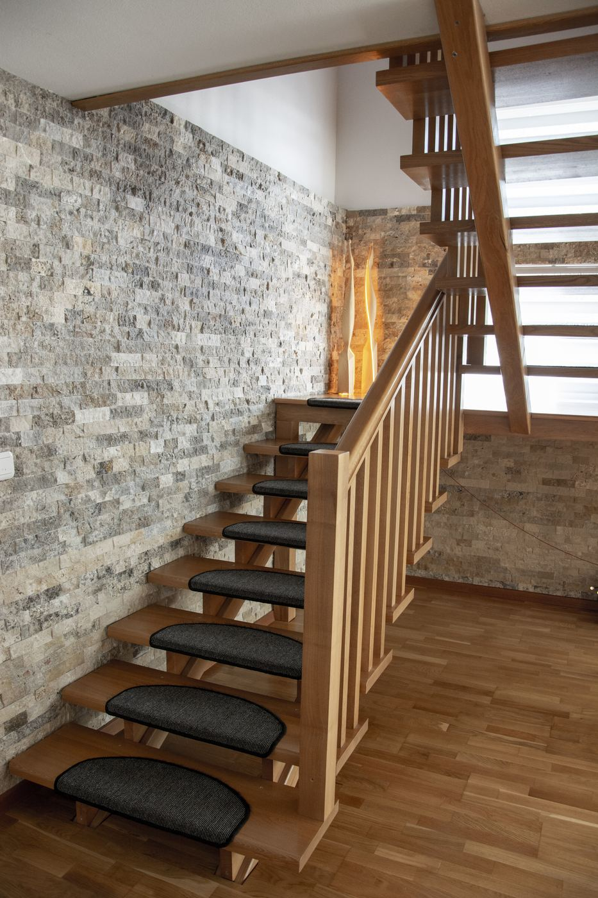

Scară din lemn natur cu balustradă din lamele.
- Categorie
- Scări
- Locație
- [Oraș, țară]
- Esență
- [de completat]
- Finisaj
- [de completat]
- An
- [an]

Despre proiect
Lumină între niveluri, lemn cald lângă piatră.
Scara a fost gândită să se așeze firesc lângă peretele de piatră naturală. Balustrada din lamele verticale lasă lumina să treacă între niveluri.
Proiectul a pornit de la măsurători la fața locului și un model 3D aprobat înainte de execuție. Lamelele au fost debitate și frezate în atelier, apoi montate de echipa BALU.
Text exemplu: detaliile reale ale proiectului (esență, finisaj, durată) se completează pentru fiecare lucrare.
Din atelier
Cum a fost realizată scara.
Filmare din atelier și de la montaj, pentru acest proiect.
Proiecte similare
Mai multe lucrări BALU.
Un proiect asemănător?
O scară pe măsura casei pornește de la câteva fotografii și dimensiuni. Restul se lucrează împreună cu designerii și meșterii BALU.